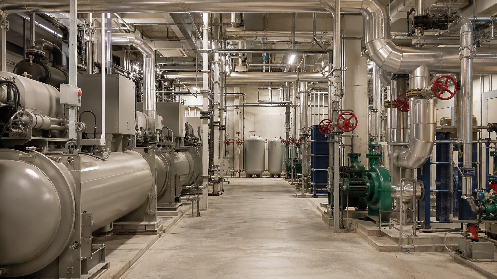
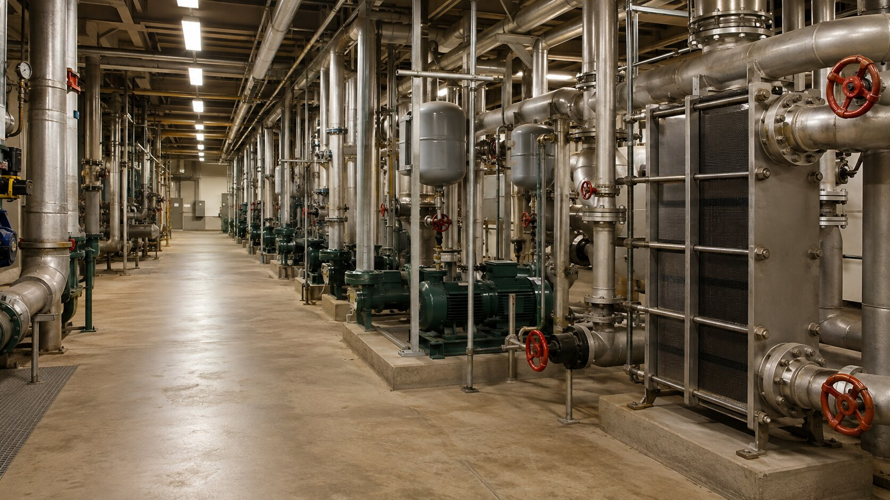

Municipal buildings
Administrative, civic, justice, recreation, and other public facilities requiring dependable chilled-water systems.
Municipal / institutional / public
Complete equipment, piping, installation, and commissioning coordination for public buildings, campuses, utilities, and essential infrastructure.
Discuss your project →
Public-sector delivery
Municipal and institutional work brings its own requirements: open procurement, defined submittal workflows, operating-facility constraints, public schedules, documentation, and long-term maintainability.
We organize the cooling package around those realities, giving project teams clearer scope ownership and a coordinated path from equipment approval through system turnover.


Facilities we support
Administrative, civic, justice, recreation, and other public facilities requiring dependable chilled-water systems.
Process and facility cooling systems supporting treatment plants, pump stations, and utility operations.
Central plants, distribution loops, phased renovations, and active-campus mechanical upgrades.
Cooling systems for facilities with tight environmental requirements and continuous operations.
Reliable systems for emergency response, operations, communications, and mission-essential buildings.
Equipment replacement, plant modernization, efficiency improvements, and capacity expansion.
Execution priorities
Clear scope and bid-package coordination
✓Submittals and procurement tracking
✓Prevailing project requirements
✓Active-facility phasing
✓Maintainability and staff access
✓Closeout, training, and asset records
✓Equipment · controls · commissioning
Fabrication · installation · tie-ins
Bring us in early
We can review procurement requirements, existing operations, outage restrictions, equipment replacement needs, maintainability, documentation, and the sequence required to keep the facility functioning.
Start the conversation →